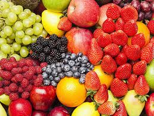

| ITEM NAME |
PRODUCT IMAGE |
DESCRIPTION |
| Maize |
 |
Maize is the World`s leading crop and
is widely cultiveted as cereal grain |
| Fruits |
 |
Fruit is a mature, ripened ovary,
along with the contents of ovary |
| Vegetables |
 |
Vegetable is editable portion of the plant such
as leaves (Lettuce), stem (celery), roots (carrot)
tubers (potato), bulbs (onion) and flowers (broccoli) |